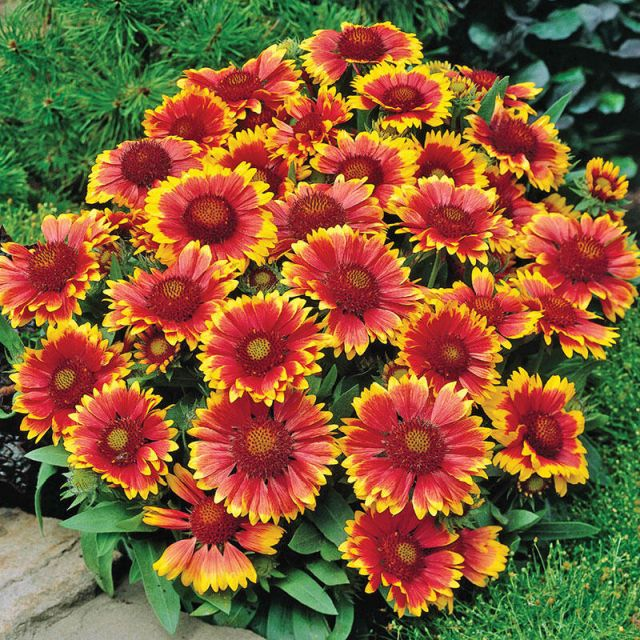

Figure 2. The distinctive flowers of the Goblin gaillardia [1].
The flower is the reproductive part of a flowering plant [3].
A flowering plant, like a fern, is also a vascular plant. However, it is more complicated. Not only does it have the xylum, but also a phloem. The phloem is made up of living tissue. It works by using cell walls to pump nutrients throughout the plant [2]. Also unlike the fern, flowering plants reproduce through seeds produced by the flower.
Flowers are very beautiful, but they play an important role. They are very attractive to pollinators who can carry pollen from the stamen of a male plant to the stigma of a female plant, giving us new seeds and more plants [3].